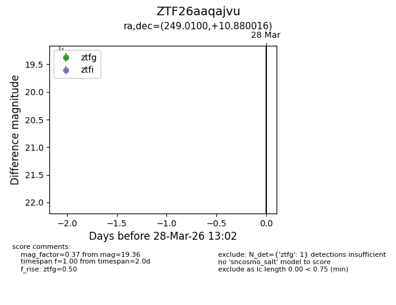
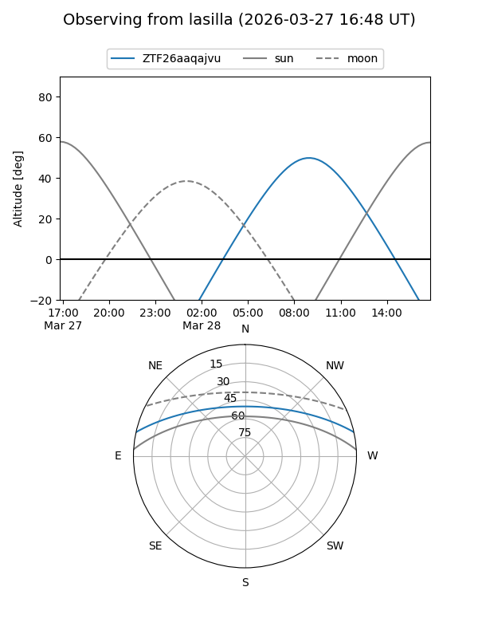
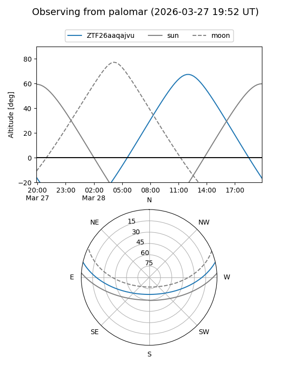

ZTF26aaqajvu
Target ZTF26aaqajvu at 2026-03-28 13:06
Aliases and brokers:
FINK: link
Lasair: link
ALeRCE: link
alt names
ZTF26aaqajvu (ztf,fink_ztf)
Coordinates:
equatorial (ra, dec) = 249.0100,+10.88002
equatorial (HMS+DMS) = 16:36:02.41,+10:52:48.06
galactic (l, b) = (27.2298,+34.95212)
Flags:
Photometry:
last ztfg=19.36
1 ztfg detections
Lightcurve

Visibility


Additional plots